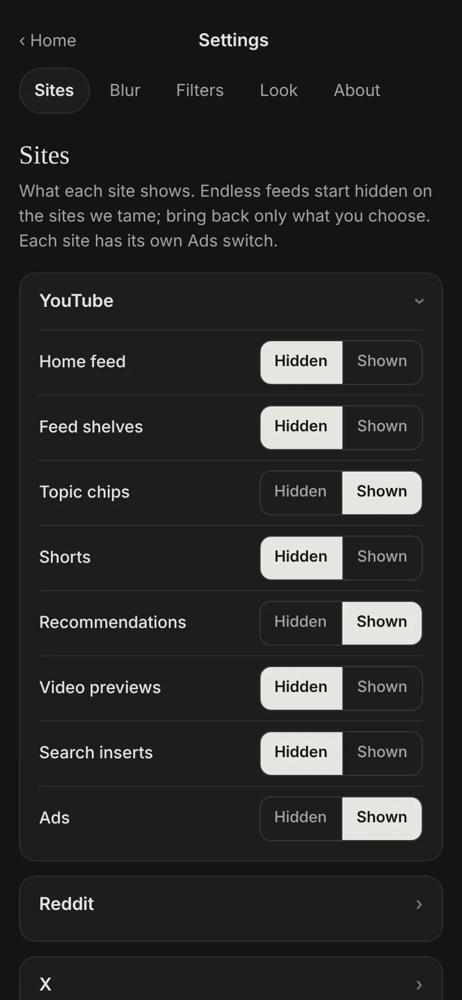
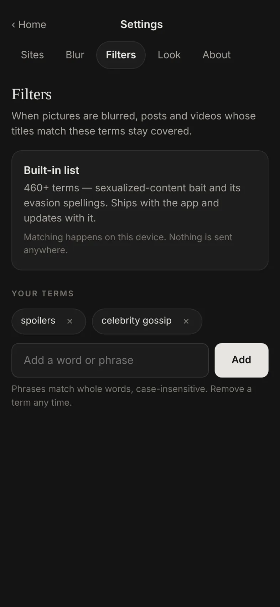

A calm browser for Android
The web,
The web,
without the feeds.
tamescroll is a web browser that quietly tames the busy sites. Feeds fold away, pictures blur by your rules, and you get to what you came for.
Free
No account
No tracking
Open source
TRENDING NOW
SHORT VIDEOS
UP NEXT IN 5
RECOMMENDED FOR YOU
Tamed. 4 things hidden · pictures blurred
Feeds fold away
Open what you came for. Then leave.
tamescroll opens any site like a normal browser. On the busy ones, the parts built to keep you scrolling are hidden before you see them.
- Endless feeds, short-video shelves, autoplay start hidden.
- Bring back anything with one switch, for each site on its own.
- A shield on every page shows what was hidden there.
videos.exampleYour choice
Home feedHiddenShown
Short videosHiddenShown
RecommendationsHiddenShown
Autoplay previewsHiddenShown
CommentsHiddenShown
Pictures, your way
See only what you choose to see.
Pick what gets blurred: every picture, women, men, or nothing. It works out each picture on your phone, so no picture is ever sent anywhere.
- Faces it can't place are blurred too.
- The video you open plays normally. Blur is a layer on your screen, never an edit.
- It isn't perfect, and we say so. Add your own words to filter too.
Every picture blurred. The video you open plays normally.
Private by design
Everything stays on your phone.
Hiding, blurring and filtering all happen on your device. We have no server, no accounts and no analytics, so there is nothing about you for us to keep.
- Private search through DuckDuckGo, with safe search set to strict.
- Trackers blocked as you browse; ads are a switch you control per site.
- Free and open source. Nothing to buy, and every claim here can be checked in the code.
Make it yours
Night or Paper. Your sites, your order.
Two looks, picked by tapping a picture of each, and larger text for older eyes and bright rooms. Add the sites you use as tiles; we never suggest one.





A calmer YouTube
Watch what you came for, then go.
YouTube is one of the sites tamescroll tames. Search, your subscriptions and the videos you pick stay; the pull into the next one doesn't.
A usual visit
- A home feed picked to keep you watching
- A shelf of short videos that never ends
- Previews that play as you scroll past
In tamescroll
- Search and your subscriptions, front and centre
- Feed and short videos hidden until you want them back
- Ads blocked if you want: they show as usual until you turn on that site's Ads switch
You watch YouTube's own website, with your own account if you sign in, and videos play as their creators published them. YouTube is a trademark of Google LLC; tamescroll is independent and not affiliated with or endorsed by Google or YouTube.
Questions
Good to know
Is tamescroll really free?
Yes. There is nothing to buy, no subscription and no account. It is open source, so you can read the code or build it yourself.
Does tamescroll block ads?
Only where you want it to. Every site has its own Ads switch. On YouTube ads show as usual until you turn that switch on; on most other sites blocking starts on, and you can turn it off. Ads help pay for the sites and creators you enjoy, so the choice is yours.
Can I sign in to my accounts?
Yes, on each site's own sign-in page, the same as in any browser. tamescroll never sees, stores or sends your passwords, and each site's own terms apply to your account.
Which sites does it work on?
Any website. Tracker blocking and the picture blur work everywhere. Six feed-heavy sites (YouTube, Reddit, X, Instagram, Facebook and TikTok) also get their own rules that fold the feeds away, and those rules update as the sites change.
Is there an iPhone or computer version?
Android comes first. Versions for iPhone and for computers are being built.
tamescroll is an independent, open-source project. It shows each site's own public page and changes only how it looks on your screen, like a reader mode or a content blocker; it never touches anyone's app or code. It is not affiliated with or endorsed by Google, YouTube, Reddit, X, Meta or TikTok, whose names are used only to say which sites it works with. Concerns go to tamescroll@proton.me. Read our privacy policy and terms of use.
Take the web back.
Download tamescroll for Android. It installs in a minute and updates itself from inside the app.
Android 7 and newer. The download is an APK from our GitHub releases; your phone asks once to allow installs from this source.
AndroidAvailable now
iPhoneBeing built
Windows and MacBeing built